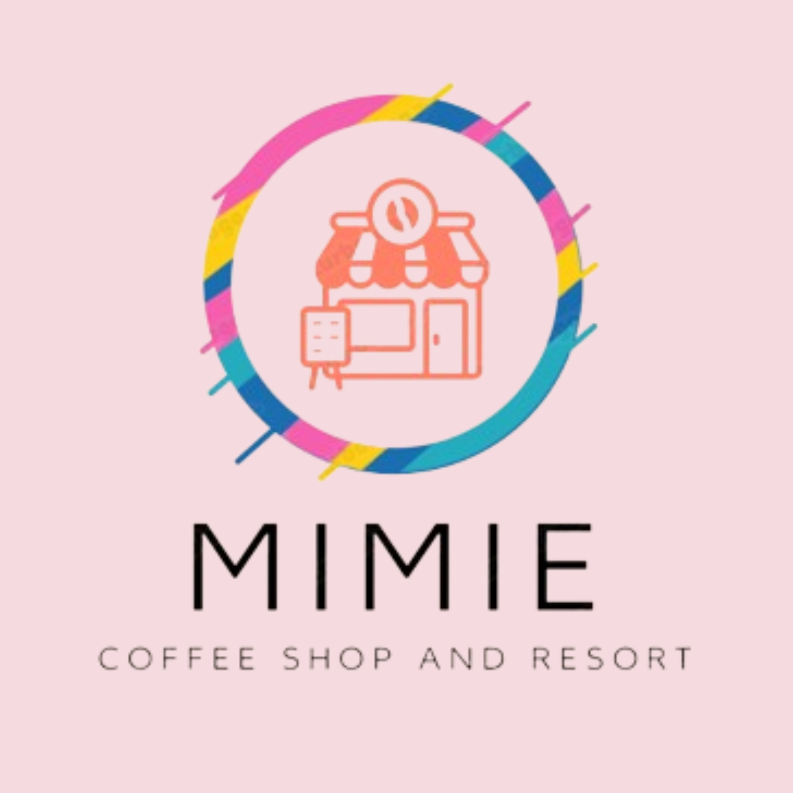

-

Majdina
KopiShop

Di sebuah sudut kota yang ramai, terdapat sebuah kedai kopi yang berdiri sebagai tempat ajaib bernama "KopiShop." Di balik pintu kayu yang klasik, terbuka ke dunia di mana harum kopi bersatu dengan kisah hidup yang tak terhitung jumlahnya.
KopiShop memiliki latar belakang yang terjalin erat dengan sejarah kopi dan perjalanan para penemu rasa. Kedai ini didirikan oleh seorang pemuda yang bermimpi membawa pengalaman kopi yang tak terlupakan ke dalam kehidupan setiap pelanggan.
Seiring waktu, KopiShop tumbuh menjadi lebih dari sekadar kedai kopi. Ia menjadi rumah bagi para pencinta kopi yang mencari ketenangan dan inspirasi. Dindingnya dipenuhi dengan catatan perjalanan, kisah cinta, dan senyuman pelanggan yang telah menciptakan kenangan indah di setiap sudut kedai.
Tidak hanya sekedar tempat untuk menikmati secangkir kopi, KopiShop menjadi saksi setiap cerita hidup yang dibagikan di antara meja-meja kayu yang hangat. Di sini, ide-ide muda menemukan tempat untuk tumbuh, dan sahabat-sahabat lama bertemu kembali.
Latar belakang KopiShop juga mencakup komitmen pada kopi berkualitas. Biji kopi dipilih dengan cermat dari ladang-ladang yang indah di seluruh dunia, dan setiap tekukan dibuat dengan penuh perhatian oleh barista yang berdedikasi. Ini adalah tempat di mana kopi bukan hanya minuman, melainkan karya seni yang dipersembahkan untuk dinikmati.
Ketika matahari terbenam, lampu-lampu kuning KopiShop menyala, menciptakan suasana yang hangat dan penuh cinta. Latar belakangnya adalah cerita-cerita kecil dan besar yang terus hidup di antara bau kopi dan tawa pelanggan.
Dengan setiap tegukan, KopiShop merangkul tradisi dan inovasi. Latar belakangnya bukan hanya tentang asal-usul biji kopi yang harum, tetapi juga tentang perjalanan panjang setiap individu yang datang ke sini, mencari ketenangan, teman, atau sekadar momen pelarian dari keramaian kota. Kopi Kenangan adalah lebih dari sekadar kedai kopi; ia adalah peluk hangat di tengah kehidupan yang sibuk.